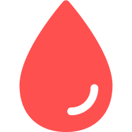

献血者数予測AI
({{prefecture_name}} | {{update}}更新)
グラフをご覧いただく際の注意点：
縦軸（Y軸）のベースラインは500から始まっており、小さな変化でも大きく見える場合があります。データの正確な理解のため、数値そのものも併せてご確認ください。
ご利用のデバイスによっては、横軸（X軸）の比率が異なり、グラフの見た目に違いが生じることがあります。表示内容にズレがある場合は、PCやタブレットなど、異なるデバイスでご確認いただくことをお勧めします。
現在の献血状況
({{prefecture_name}} | {{update}}更新)
400mL
A型
{{a4}}
O型
{{o4}}
B型
{{b4}}
AB型
{{ab4}}
200mL
A型
{{a2}}
O型
{{o2}}
B型
{{b2}}
AB型
{{ab2}}
成分献血
A型
{{ac}}
O型
{{oc}}
B型
{{bc}}
AB型
{{abc}}
数字で見る献血事業
({{prefecture_name}} | {{update}}更新)
これまで献血に協力していただいた人数
0人
これまでに献血された血液の総量

0kL
献血ルームの総数
0箇所